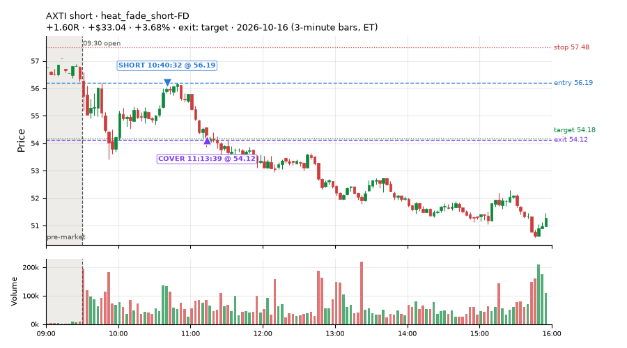
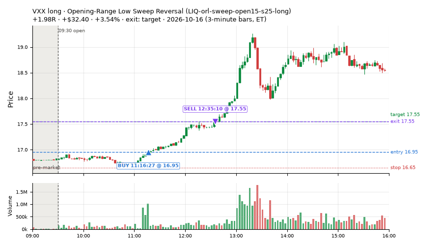
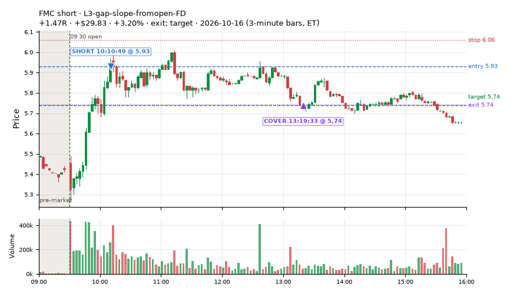
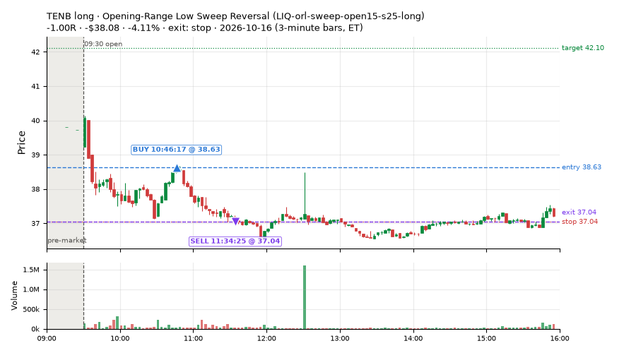
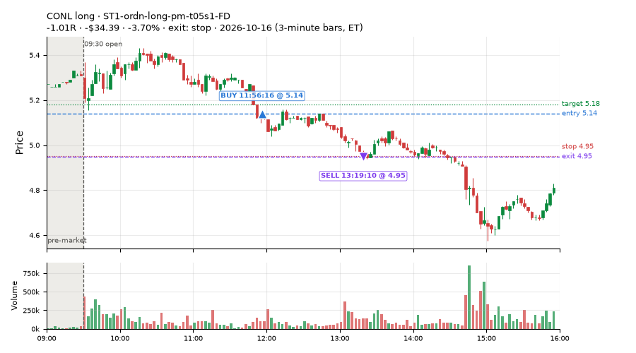
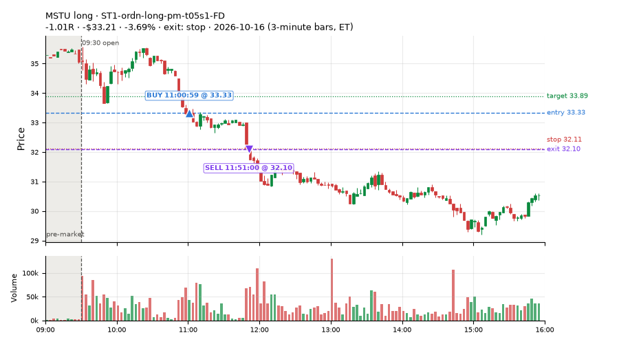
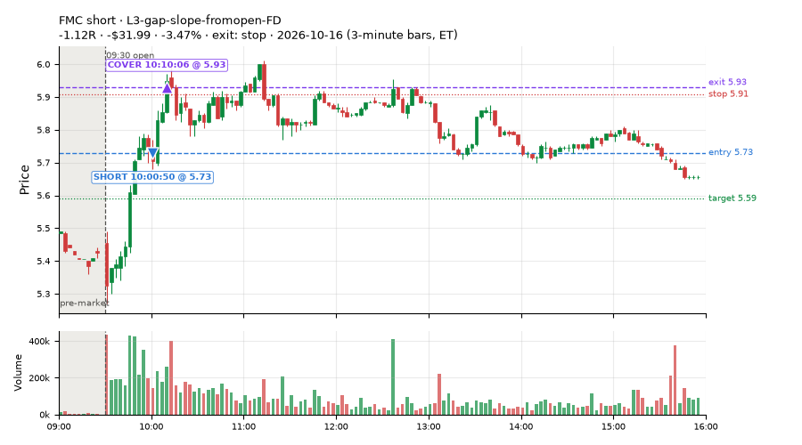
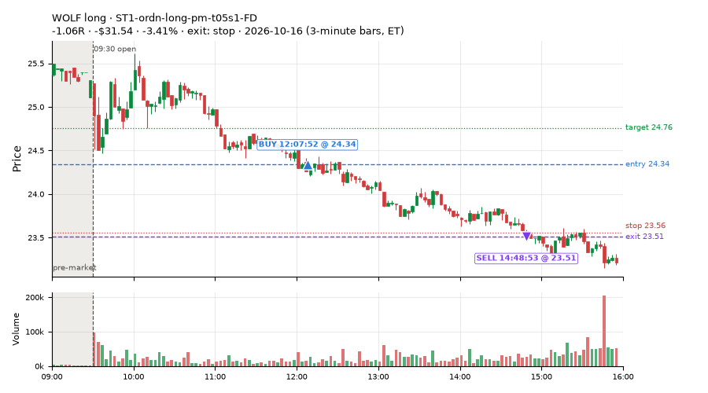

323 trades · win rate 48% · P/L $-19.40
PROBATION: no live setup has passed both locked test periods. 10 owner-directed setups added 2026-10-08 (MarcoFlow top 5 + 5 new), untested live. RW6G1 (RW6 + VWAP band guard) added 2026-10-09, probation.

| Symbol | Setup | Side | In | Out | Entry | Exit | Exit reason | % gained | P/L |
|---|---|---|---|---|---|---|---|---|---|
| AXTI | heat_fade_short-FD | short | 10:40 | 11:13 | 56.19 | 54.12 | target | +3.68% | $33.04 |
| VXX | Opening-Range Low Sweep Reversal (LIQ-orl-sweep-open15-s25-long) | long | 11:16 | 12:35 | 16.95 | 17.55 | target | +3.54% | $32.40 |
| FMC | L3-gap-slope-fromopen-FD | short | 10:10 | 13:19 | 5.93 | 5.74 | target | +3.20% | $29.83 |
| Symbol | Setup | Side | In | Out | Entry | Exit | Exit reason | % lost | P/L |
|---|---|---|---|---|---|---|---|---|---|
| TENB | LIQ-orl-sweep-open15-s25-long | long | 10:46 | 11:34 | 38.63 | 37.04 | stop | -4.11% | $-38.08 |
| CONL | ST1-ordn-long-pm-t05s1-FD | long | 11:56 | 13:19 | 5.14 | 4.95 | stop | -3.70% | $-34.39 |
| MSTU | ST1-ordn-long-pm-t05s1-FD | long | 11:00 | 11:51 | 33.33 | 32.10 | stop | -3.69% | $-33.21 |
| FMC | L3-gap-slope-fromopen-FD | short | 10:00 | 10:10 | 5.73 | 5.93 | stop | -3.47% | $-31.99 |
| WOLF | ST1-ordn-long-pm-t05s1-FD | long | 12:07 | 14:48 | 24.34 | 23.51 | stop | -3.41% | $-31.54 |








Signal to fill: median 1s, 90th percentile 3s (321 trades). Bars close each minute; the order follows the bar close.
Best excursion (MFE): median 0.65R; worst (MAE) median 0.77R. 25% of trades never got +0.25R in our favour; 13 reached +1R and still closed at or below 0.
| Symbol | Setup | Best R | Worst R | Closed R |
|---|---|---|---|---|
| EXC | MF1-945-flowsell-vwapup-FD | +2.72 | -1.20 | -1.05 |
| DUK | MF1-945-flowsell-vwapup-FD | +1.96 | -1.29 | -1.34 |
| XBI | heat_fade_long-FD | +1.61 | -1.06 | -0.95 |
| ADBE | heat_fade_long-FD | +1.44 | -1.05 | -1.06 |
| SMTC | heat_fade_long-FD | +1.31 | -1.10 | -1.15 |
| Entry time | Trades | Win | Avg R | P/L |
|---|---|---|---|---|
| 09:50-10:30 | 59 | 44% | -0.16 | $11.76 |
| 10:30-11:30 | 93 | 51% | -0.08 | $-21.90 |
| 11:30-13:00 | 78 | 41% | -0.19 | $-120.62 |
| 13:00-14:00 | 46 | 41% | -0.10 | $14.58 |
| 14:00-16:00 | 47 | 64% | +0.25 | $96.78 |
| Setup | Trades | Win | Avg R | Adj R (net of SPY) | P/L |
|---|---|---|---|---|---|
| L3-gap-slope-fromopen-FD | 8.0 | 62% | +0.35 | +0.03 | $20.10 |
| L3-gap-slope-rsi5hi-FD | 4.0 | 75% | +0.12 | +0.02 | $-9.72 |
| Opening-Range Low Sweep Reversal (LIQ-orl-sweep-open15-s25-long) | 17.0 | 29% | -0.31 | +0.17 | $-102.57 |
| Prior-Day Low Sweep Reversal to VWAP (LIQ-pdl-sweep-open15-vwap-long) | 1.0 | 0% | -1.04 | -0.54 | $-2.71 |
| MF1-945-flowsell-vwapup-FD | 11.0 | 18% | -0.65 | -1.44 | $-9.95 |
| MF2-open-rsimidhi-flowsell-FD | 5.0 | 100% | +1.38 | +1.18 | $42.25 |
| Early Sellers into a Pop (all day) (MF3-open-flowsell-rsi5hi-FD) | 10.0 | 60% | +0.01 | -0.68 | $33.53 |
| MF4-h40-open-flowsell-FD | 4.0 | 75% | -0.04 | -0.21 | $4.93 |
| MF5-flowsell-vwapup-rsi5hi-FD | 7.0 | 29% | -0.55 | -1.52 | $-11.65 |
| NS1-rsidip-rsi5pop-long-FD | 1.0 | 0% | -1.07 | -1.00 | $-9.70 |
| NS2-sma50break-overbought-short-FD | 1.0 | 100% | +0.78 | +0.97 | $6.30 |
| Big Loser VWAP Reclaim Fade (NS3-failed-vwap-reclaim-short) owner-directed; holdouts once: Sep-Oct +0.119R n65, Apr-Jun -0.136R n524 | 2.0 | 50% | +0.06 | -0.23 | $13.84 |
| NS3-failed-vwap-reclaim-short-FD | 8.0 | 50% | +0.26 | +0.11 | $37.88 |
| NS4-pm-vwap-reclaim-oversold-short-FD | 1.0 | 100% | +2.15 | +1.43 | $9.18 |
| NS5-sma50-flush-oversold-long-FD | 3.0 | 33% | -0.64 | -0.08 | $-34.42 |
| RW1-gapdn-bounce-flowsell-short-FD | 4.0 | 50% | +0.31 | +0.27 | $19.06 |
| RW2-exhaustion-noon-adv150-short-FD | 19.0 | 74% | +0.45 | +0.20 | $80.64 |
| Gap-Down Pop Fade, Heavy Selling (all day) (RW3-gapdn-rsi5pop-flowsell-short-FD) | 3.0 | 100% | +0.65 | +0.25 | $17.98 |
| RW4-ns3-adv150-short-FD | 9.0 | 56% | +0.24 | +0.11 | $39.24 |
| Gap-Down Pop Fade (all day) (RW5-heat30-flowsell-rsi5pop-gapdn-short-FD) | 2.0 | 50% | +0.34 | -0.20 | $2.46 |
| RW6-ns2-up3-short-FD | 1.0 | 100% | +0.78 | +0.97 | $6.30 |
| RW6G1-ns2-up3-vwap2sd-short-FD | 1.0 | 100% | +0.78 | +0.97 | $6.30 |
| RW7-gapdn-bounce-early-short-FD | 22.0 | 64% | +0.34 | +0.19 | $134.69 |
| ST1-ordn-long-pm-t05s1-FD | 19.0 | 32% | -0.58 | -0.45 | $-210.08 |
| ST2-slope20up-long-am-t05s1-FD | 16.0 | 62% | -0.05 | -0.00 | $-24.72 |
| ST7-rsi50dn-long-pm-t1s1-FD | 1.0 | 100% | +0.44 | +0.18 | $4.20 |
| ST8-volspikedn-long-pm-t1s1-FD | 2.0 | 50% | +0.09 | -0.03 | $-6.11 |
| Afternoon Blow-off Short (exhaustion_short) failed Apr-Jun holdout: -0.020R/trade over 622 trades | 1.0 | 0% | -1.03 | -1.27 | $-6.96 |
| exhaustion_short-FD | 2.0 | 0% | -0.94 | -1.20 | $-13.23 |
| Midday Gap-Up Dip Buy (heat_fade_long) failed Apr-Jun holdout: -0.138R/trade over 1043 trades | 45.0 | 22% | -0.53 | -0.18 | $-195.47 |
| heat_fade_long-FD | 49.0 | 20% | -0.64 | -0.45 | $-231.93 |
| Morning Bounce Fade (heat_fade_short) failed Apr-Jun holdout: -0.015R/trade over 1420 trades | 7.0 | 86% | +0.73 | +0.39 | $77.90 |
| heat_fade_short-FD | 35.0 | 80% | +0.58 | +0.29 | $284.71 |
| Index Last-Half-Hour Momentum (intraday_momentum) failed Apr-Jun holdout: -0.091R/trade over 147 trades | 1.0 | 100% | +0.31 | +0.44 | $0.80 |
| 20-Minute Opening Range Breakout (orb20_a) failed Apr-Jun holdout: -0.040R/trade over 421 trades | 1.0 | 100% | +0.52 | -0.16 | $7.54 |
Market direction (SPY, beta 1) accounted for $61.54 of today's $-19.40; the rest ($-80.94) came from the setups themselves. Avg R net of SPY: -0.13 (incl. a hedge leg's cost; report only).
46 setups live today. Today: 544 signals, 323 taken, 39 lost because another setup held the symbol (7%). Since 2026-10-09 (6 sessions): 3796 signals, 1495 taken, 327 lost to other setups (9%). Peak open positions today 99 of 400 slots. Earnings blackout removed 353 symbols before scanning.
Simulated playing time (not live): 2296 what-if trades of signals not taken, avg -0.42R, 34% winners; of them 327 lost to another setup (avg -0.03R).
Crowded out: ST4-emadn-long-am-t1s05-FD, MF5-flowsell-vwapup-rsi5hi-FD, MF4-h40-open-flowsell-FD, RW4-ns3-adv150-short-FD, NS3-failed-vwap-reclaim-short-FD, MF1-945-flowsell-vwapup-FD, MF3-open-flowsell-rsi5hi-FD, RW4-ns3-adv150-short · Starved: ST3-rsi5up-short-pm-t1s1-FD, NS4-pm-vwap-reclaim-oversold-short-FD, exhaustion_short, exhaustion_short-FD, heat_fade_short, orb20_a
| Prio | Setup | Today sig / taken | Sessions | Signals / taken / trades | Taken/day | Expected/day | Lost to other setups | Lost to (setup n) | Top skip reasons | SIMULATED: not-taken n / avg R / win | Verdict |
|---|---|---|---|---|---|---|---|---|---|---|---|
| 1 | Index Dip Bounce 1 TQQQ IDX1-qqq100-0955-TQQQ-trail | 0 / 0 | 1 | 0 / 0 / 0 | 0.00 | – | 0 | – | – | 0 / – | quiet - wait no signals in 1 session(s); too early to tell |
| 2 | Index Dip Bounce 1 TQQQ (hold) IDX1-qqq100-0955-TQQQ-hold | 0 / 0 | 1 | 0 / 0 / 0 | 0.00 | – | 0 | – | – | 0 / – | quiet - wait no signals in 1 session(s); too early to tell |
| 3 | Index Dip Bounce 2 3x S&P IDX2-spy075-0945-3x-trail | 0 / 0 | 1 | 0 / 0 / 0 | 0.00 | – | 0 | – | – | 0 / – | quiet - wait no signals in 1 session(s); too early to tell |
| 4 | Index Dip Bounce 3 3x S&P IDX3-spy075-0955-3x-trail | 0 / 0 | 1 | 0 / 0 / 0 | 0.00 | – | 0 | – | – | 0 / – | quiet - wait no signals in 1 session(s); too early to tell |
| 5 | Index Dip Bounce 5 3x S&P IDX5-spy050-0945-3x-trail | 0 / 0 | 1 | 0 / 0 / 0 | 0.00 | – | 0 | – | – | 0 / – | quiet - wait no signals in 1 session(s); too early to tell |
| 6 | Prior-Day Low Sweep Reversal to VWAP LIQ-pdl-sweep-open15-vwap-long | 1 / 1 | 4 | 1 / 1 / 1 | 0.25 | 0.38 | 0 | – | – | 0 / – | slow 1.2 entries/week; ~48 weeks to 60 trades |
| 7 | ST5-pdbrkup-short-mid-t05s1-FD ST5-pdbrkup-short-mid-t05s1-FD | 1 / 0 | 5 | 2 / 1 / 1 | 0.20 | 0.78 | 0 | – | broker rejected 1 | 1 / +0.45R / 100% | slow 1.0 entries/week; ~60 weeks to 60 trades |
| 8 | ST8-volspikedn-long-pm-t1s1-FD ST8-volspikedn-long-pm-t1s1-FD | 2 / 2 | 5 | 5 / 4 / 4 | 0.80 | 1.05 | 1 | orb20_a 1 | symbol held by another setup 1 | 1 / +0.91R / 100% | slow 4.0 entries/week; ~15 weeks to 60 trades |
| 9 | ST6-volspikeup-short-mid-t1s1-FD ST6-volspikeup-short-mid-t1s1-FD | 1 / 0 | 5 | 3 / 2 / 2 | 0.40 | 1.24 | 0 | – | spread / quote / size 1 | 1 / +0.52R / 100% | slow 2.0 entries/week; ~30 weeks to 60 trades |
| 10 | ST3-rsi5up-short-pm-t1s1-FD ST3-rsi5up-short-pm-t1s1-FD | 1 / 0 | 5 | 2 / 0 / 0 | 0.00 | 1.35 | 1 | RW4-ns3-adv150-short-FD 1, NS3-failed-vwap-reclaim-short-FD 1, NS3-failed-vwap-reclaim-short 1 | symbol held by another setup 1, spread / quote / size 1 | 2 / -0.06R / 50% | starved 0.00 entries/day vs ~1.35 expected |
| 11 | ST7-rsi50dn-long-pm-t1s1-FD ST7-rsi50dn-long-pm-t1s1-FD | 1 / 1 | 5 | 9 / 7 / 7 | 1.40 | 2.17 | 1 | orb20_a 1 | symbol held by another setup 1, daily loss cap 1 | 2 / -0.06R / 50% | slow 7.0 entries/week; ~9 weeks to 60 trades |
| 12 | ST4-emadn-long-am-t1s05-FD ST4-emadn-long-am-t1s05-FD | 1 / 0 | 5 | 15 / 7 / 7 | 1.40 | 2.77 | 6 | RW7-gapdn-bounce-early-short-FD 2, RW5-heat30-flowsell-rsi5pop-gapdn-short-FD 2, orb20_a 1 | symbol held by another setup 6, spread / quote / size 2 | 8 / -0.57R / 25% | crowded-out 6 of 15 signals (40%) lost to setups already holding the symbol |
| 13 | ST1-ordn-long-pm-t05s1-FD ST1-ordn-long-pm-t05s1-FD | 20 / 19 | 5 | 23 / 22 / 22 | 4.40 | 3.49 | 0 | – | spread / quote / size 1 | 1 / -1.01R / 0% | ok 22.0 entries/week |
| 14 | NS4-pm-vwap-reclaim-oversold-short-FD NS4-pm-vwap-reclaim-oversold-short-FD | 1 / 1 | 5 | 10 / 2 / 2 | 0.40 | 3.57 | 0 | – | not shortable / shorts off 7, spread / quote / size 1 | 8 / -0.77R / 12% | starved 0.40 entries/day vs ~3.57 expected |
| 15 | RW6G1-ns2-up3-vwap2sd-short-FD RW6G1-ns2-up3-vwap2sd-short-FD | 1 / 1 | 5 | 15 / 9 / 9 | 1.80 | 3.73 | 1 | RW6G1-ns2-up3-vwap2sd-short-FD 1, RW6-ns2-up3-short-FD 1, NS2-sma50break-overbought-short-FD 1 | not shortable / shorts off 2, spread / quote / size 2, symbol held by another setup 1 | 6 / -0.07R / 33% | slow 9.0 entries/week; ~7 weeks to 60 trades |
| 16 | L3-gap-slope-rsi5hi-FD L3-gap-slope-rsi5hi-FD | 15 / 4 | 5 | 250 / 22 / 22 | 4.40 | 13.41 | 4 | L3-gap-slope-fromopen-FD 3, RW6G1-ns2-up3-vwap2sd-short-FD 1, RW6-ns2-up3-short-FD 1 | daily loss cap 119, not shortable / shorts off 105, symbol held by another setup 4 | 227 / -0.24R / 57% | ok 22.0 entries/week |
| 17 | L3-gap-slope-lowdist-FD L3-gap-slope-lowdist-FD | 1 / 0 | 5 | 127 / 16 / 16 | 3.20 | 9.76 | 5 | RW6-ns2-up3-short-FD 2, NS2-sma50break-overbought-short-FD 2, L3-gap-slope-rsi5hi-FD 2 | daily loss cap 72, not shortable / shorts off 30, symbol held by another setup 5 | 109 / -0.42R / 32% | ok 16.0 entries/week |
| 18 | L3-gap-slope-fromopen-FD L3-gap-slope-fromopen-FD | 53 / 8 | 5 | 965 / 41 / 41 | 8.20 | 11.44 | 14 | L3-gap-slope-fromopen-FD 8, RW6-ns2-up3-short-FD 3, NS2-sma50break-overbought-short-FD 3 | daily loss cap 489, not shortable / shorts off 409, symbol held by another setup 14 | 922 / -0.81R / 15% | ok 41.0 entries/week |
| 19 | NS1-rsidip-rsi5pop-long-FD NS1-rsidip-rsi5pop-long-FD | 1 / 1 | 5 | 15 / 10 / 10 | 2.00 | 5.39 | 0 | – | daily loss cap 5 | 5 / +0.08R / 80% | slow 10.0 entries/week; ~6 weeks to 60 trades |
| 20 | NS5-sma50-flush-oversold-long-FD NS5-sma50-flush-oversold-long-FD | 5 / 3 | 5 | 14 / 9 / 9 | 1.80 | 6.32 | 1 | heat_fade_short-FD 1 | daily loss cap 2, spread / quote / size 2, symbol held by another setup 1 | 5 / +0.71R / 100% | slow 9.0 entries/week; ~7 weeks to 60 trades |
| 21 | RW6-ns2-up3-short-FD RW6-ns2-up3-short-FD | 1 / 1 | 5 | 77 / 35 / 35 | 7.00 | 7.12 | 3 | L3-gap-slope-fromopen-FD 2, L3-gap-slope-lowdist-FD 2, RW2-exhaustion-noon-adv150-short-FD 1 | daily loss cap 16, not shortable / shorts off 16, spread / quote / size 7 | 42 / -0.19R / 38% | ok 35.0 entries/week |
| 22 | MF2-open-rsimidhi-flowsell-FD MF2-open-rsimidhi-flowsell-FD | 9 / 5 | 5 | 38 / 19 / 19 | 3.80 | 10.09 | 5 | RW3-gapdn-rsi5pop-flowsell-short-FD 2, heat_fade_long 2, RW7-gapdn-bounce-early-short-FD 1 | spread / quote / size 7, not shortable / shorts off 6, symbol held by another setup 5 | 19 / +0.21R / 47% | ok 19.0 entries/week |
| 23 | Gap-Down Pop Fade (all day) RW5-heat30-flowsell-rsi5pop-gapdn-short-FD | 3 / 2 | 5 | 43 / 29 / 29 | 5.80 | 12.79 | 7 | RW3-gapdn-rsi5pop-flowsell-short-FD 3, RW7-gapdn-bounce-early-short-FD 3, NS2-sma50break-overbought-short-FD 1 | symbol held by another setup 7, not shortable / shorts off 5, daily loss cap 1 | 14 / -0.20R / 43% | ok 29.0 entries/week |
| 24 | Gap-Down Pop Fade, Heavy Selling (all day) RW3-gapdn-rsi5pop-flowsell-short-FD | 5 / 3 | 5 | 43 / 31 / 31 | 6.20 | 13.59 | 7 | RW5-heat30-flowsell-rsi5pop-gapdn-short-FD 4, RW1-gapdn-bounce-flowsell-short-FD 1, NS2-sma50break-overbought-short-FD 1 | symbol held by another setup 7, not shortable / shorts off 4, spread / quote / size 1 | 12 / +0.32R / 75% | ok 31.0 entries/week |
| 25 | MF5-flowsell-vwapup-rsi5hi-FD MF5-flowsell-vwapup-rsi5hi-FD | 9 / 7 | 5 | 38 / 24 / 24 | 4.80 | 15.47 | 10 | RW5-heat30-flowsell-rsi5pop-gapdn-short-FD 5, RW3-gapdn-rsi5pop-flowsell-short-FD 2, RW1-gapdn-bounce-flowsell-short-FD 2 | symbol held by another setup 10, not shortable / shorts off 2, spread / quote / size 2 | 14 / +0.11R / 64% | crowded-out 10 of 38 signals (26%) lost to setups already holding the symbol |
| 26 | MF4-h40-open-flowsell-FD MF4-h40-open-flowsell-FD | 11 / 4 | 5 | 57 / 20 / 20 | 4.00 | 16.45 | 19 | MF5-flowsell-vwapup-rsi5hi-FD 6, MF1-945-flowsell-vwapup-FD 4, RW5-heat30-flowsell-rsi5pop-gapdn-short-FD 3 | symbol held by another setup 19, not shortable / shorts off 11, spread / quote / size 6 | 37 / +0.07R / 70% | crowded-out 19 of 57 signals (33%) lost to setups already holding the symbol |
| 27 | RW1-gapdn-bounce-flowsell-short-FD RW1-gapdn-bounce-flowsell-short-FD | 4 / 4 | 5 | 47 / 32 / 32 | 6.40 | 17.10 | 10 | RW3-gapdn-rsi5pop-flowsell-short-FD 5, MF2-open-rsimidhi-flowsell-FD 3, RW5-heat30-flowsell-rsi5pop-gapdn-short-FD 3 | symbol held by another setup 10, not shortable / shorts off 4, spread / quote / size 1 | 15 / +0.31R / 73% | ok 32.0 entries/week |
| 28 | RW4-ns3-adv150-short-FD RW4-ns3-adv150-short-FD | 17 / 9 | 5 | 53 / 25 / 25 | 5.00 | 17.34 | 14 | ST2-slope20up-long-am-t05s1-FD 7, heat_fade_long 3, RW4-ns3-adv150-short-FD 3 | symbol held by another setup 14, not shortable / shorts off 10, spread / quote / size 4 | 28 / -0.10R / 43% | crowded-out 14 of 53 signals (26%) lost to setups already holding the symbol |
| 29 | NS2-sma50break-overbought-short-FD NS2-sma50break-overbought-short-FD | 1 / 1 | 5 | 112 / 65 / 65 | 13.00 | 17.08 | 3 | L3-gap-slope-fromopen-FD 3, L3-gap-slope-rsi5hi-FD 2, L3-gap-slope-lowdist-FD 2 | daily loss cap 19, not shortable / shorts off 17, spread / quote / size 8 | 47 / -0.12R / 40% | ok 65.0 entries/week |
| 30 | Big Gainer Average Reclaim Fade NS2-sma50break-overbought-short | 0 / 0 | 2 | 0 / 0 / 0 | 0.00 | 5.74 | 0 | – | – | 0 / – | watch no signals in 2 session(s), ~11.5 expected |
| 31 | NS3-failed-vwap-reclaim-short-FD NS3-failed-vwap-reclaim-short-FD | 18 / 8 | 5 | 63 / 23 / 23 | 4.60 | 22.02 | 26 | RW4-ns3-adv150-short-FD 11, ST2-slope20up-long-am-t05s1-FD 10, NS3-failed-vwap-reclaim-short-FD 4 | symbol held by another setup 26, not shortable / shorts off 10, spread / quote / size 4 | 40 / -0.10R / 42% | crowded-out 26 of 63 signals (41%) lost to setups already holding the symbol |
| 32 | Big Loser VWAP Reclaim Fade NS3-failed-vwap-reclaim-short | 3 / 2 | 3 | 17 / 10 / 10 | 3.33 | 3.03 | 0 | – | not shortable / shorts off 4, spread / quote / size 3 | 7 / +0.16R / 57% | ok 16.7 entries/week |
| 33 | MF1-945-flowsell-vwapup-FD MF1-945-flowsell-vwapup-FD | 17 / 11 | 5 | 71 / 26 / 26 | 5.20 | 23.94 | 24 | MF5-flowsell-vwapup-rsi5hi-FD 10, RW5-heat30-flowsell-rsi5pop-gapdn-short-FD 6, RW3-gapdn-rsi5pop-flowsell-short-FD 4 | symbol held by another setup 24, spread / quote / size 15, daily loss cap 3 | 45 / -0.38R / 29% | crowded-out 24 of 71 signals (34%) lost to setups already holding the symbol |
| 34 | Early Sellers into a Pop (all day) MF3-open-flowsell-rsi5hi-FD | 14 / 10 | 5 | 70 / 31 / 31 | 6.20 | 24.16 | 28 | MF5-flowsell-vwapup-rsi5hi-FD 13, RW5-heat30-flowsell-rsi5pop-gapdn-short-FD 7, RW3-gapdn-rsi5pop-flowsell-short-FD 4 | symbol held by another setup 28, spread / quote / size 6, not shortable / shorts off 4 | 39 / -0.08R / 51% | crowded-out 28 of 70 signals (40%) lost to setups already holding the symbol |
| 35 | ST2-slope20up-long-am-t05s1-FD ST2-slope20up-long-am-t05s1-FD | 22 / 16 | 5 | 101 / 63 / 63 | 12.60 | 24.03 | 24 | RW7-gapdn-bounce-early-short-FD 10, heat_fade_short-FD 8, RW5-heat30-flowsell-rsi5pop-gapdn-short-FD 4 | symbol held by another setup 24, daily loss cap 9, spread / quote / size 4 | 38 / -0.09R / 60% | ok 63.0 entries/week |
| 36 | RW2-exhaustion-noon-adv150-short-FD RW2-exhaustion-noon-adv150-short-FD | 29 / 19 | 5 | 219 / 119 / 119 | 23.80 | 50.34 | 3 | L3-gap-slope-fromopen-FD 2, L3-gap-slope-rsi5hi-FD 2, RW6-ns2-up3-short-FD 1 | daily loss cap 44, spread / quote / size 33, not shortable / shorts off 20 | 100 / -0.26R / 39% | ok 119.0 entries/week |
| 37 | Midday Gap-Up Dip Buy heat_fade_long | 59 / 45 | 5 | 93 / 68 / 68 | 13.60 | 30.36 | 5 | heat_fade_long-FD 2, ST4-emadn-long-am-t1s05-FD 1, ST7-rsi50dn-long-pm-t1s1-FD 1 | spread / quote / size 16, symbol held by another setup 5, daily loss cap 4 | 25 / -0.21R / 44% | ok 68.0 entries/week |
| 38 | heat_fade_long-FD heat_fade_long-FD | 75 / 49 | 5 | 154 / 91 / 91 | 18.20 | 51.74 | 8 | heat_fade_long 5, ST7-rsi50dn-long-pm-t1s1-FD 2, ST4-emadn-long-am-t1s05-FD 1 | spread / quote / size 51, symbol held by another setup 8, daily loss cap 4 | 63 / -0.14R / 48% | ok 91.0 entries/week |
| 39 | RW7-gapdn-bounce-early-short-FD RW7-gapdn-bounce-early-short-FD | 33 / 22 | 5 | 225 / 156 / 156 | 31.20 | 59.92 | 32 | LIQ-orl-sweep-open15-s25-long 11, RW1-gapdn-bounce-flowsell-short-FD 9, MF2-open-rsimidhi-flowsell-FD 7 | symbol held by another setup 32, not shortable / shorts off 23, spread / quote / size 9 | 69 / +0.11R / 59% | ok 156.0 entries/week |
| 40 | Afternoon Blow-off Short exhaustion_short | 7 / 1 | 5 | 26 / 15 / 15 | 3.00 | 12.12 | 3 | RW2-exhaustion-noon-adv150-short-FD 1, L3-gap-slope-rsi5hi-FD 1, L3-gap-slope-lowdist-FD 1 | not shortable / shorts off 5, symbol held by another setup 3, spread / quote / size 2 | 11 / -0.07R / 46% | starved 3.00 entries/day vs ~12.12 expected |
| 41 | exhaustion_short-FD exhaustion_short-FD | 7 / 2 | 5 | 101 / 20 / 20 | 4.00 | 64.64 | 9 | RW2-exhaustion-noon-adv150-short-FD 6, L3-gap-slope-fromopen-FD 4, L3-gap-slope-lowdist-FD 3 | daily loss cap 52, not shortable / shorts off 17, symbol held by another setup 9 | 81 / -0.41R / 32% | starved 4.00 entries/day vs ~64.64 expected |
| 42 | Morning Bounce Fade heat_fade_short | 11 / 7 | 5 | 62 / 32 / 32 | 6.40 | 31.76 | 0 | – | spread / quote / size 25, not shortable / shorts off 5 | 30 / +0.04R / 50% | starved 6.40 entries/day vs ~31.76 expected |
| 43 | heat_fade_short-FD heat_fade_short-FD | 58 / 35 | 5 | 399 / 240 / 240 | 48.00 | 173.78 | 39 | LIQ-orl-sweep-open15-s25-long 12, RW7-gapdn-bounce-early-short-FD 6, ST2-slope20up-long-am-t05s1-FD 6 | spread / quote / size 81, symbol held by another setup 39, daily loss cap 26 | 159 / -0.06R / 48% | ok 240.0 entries/week |
| 44 | Opening-Range Low Sweep Reversal LIQ-orl-sweep-open15-s25-long | 20 / 17 | 4 | 135 / 120 / 120 | 30.00 | 31.30 | 2 | orb20_a 1, MF4-h40-open-flowsell-FD 1 | spread / quote / size 11, symbol held by another setup 2, daily loss cap 2 | 15 / -0.28R / 33% | ok 150.0 entries/week |
| 45 | Index Last-Half-Hour Momentum intraday_momentum | 1 / 1 | 5 | 6 / 5 / 5 | 1.00 | 2.37 | 0 | – | daily loss cap 1 | 1 / -0.26R / 0% | slow 5.0 entries/week; ~12 weeks to 60 trades |
| 46 | 20-Minute Opening Range Breakout orb20_a | 5 / 1 | 5 | 18 / 5 / 5 | 1.00 | 6.79 | 0 | – | trigger missed between polls 10, not shortable / shorts off 2, spread / quote / size 1 | 13 / -0.01R / 54% | starved 1.00 entries/day vs ~6.79 expected |
Every trade is attached as a CSV you can open and edit in Excel or Google Sheets. Live page: https://misiti15.github.io/MCF/live/